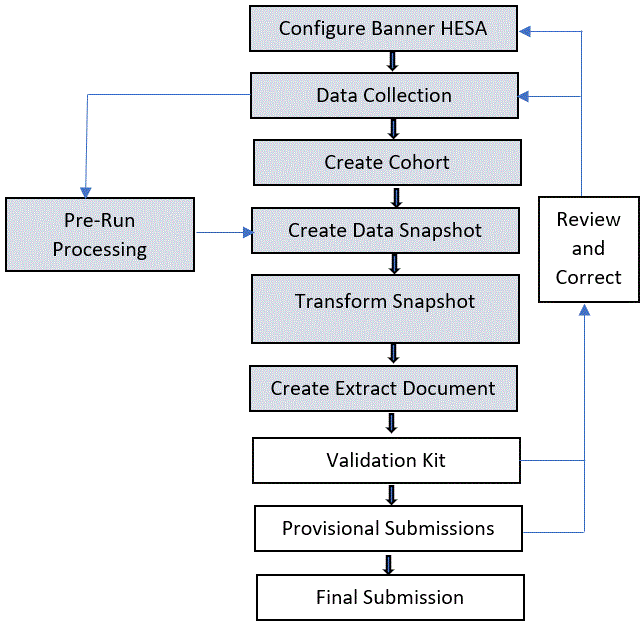

HESA ITT Collection
The Banner® HESA Initial Teacher Training (ITT) return, introduced for 2008/09, is handled in a similar way as the HESA Student return. The pages used for entering HESA Student data also collect the data needed for the ITT return.
Producing the ITT Return
A separate Banner Mass Data Update Utility (MDUU) process tree (ESC_HIT) has been provided for ITT, with MDUU activities modeled after those in the ESC_HST tree for the HESA Student return.
HESA uses MDUU to manage the ITT processing. This document uses the following key terms to describe MDUU elements.
- Process: This represents a set of tasks sharing a common business area. MDUU security allows you to associate users and user classes to a given process. If this functionality is activated, only users assigned to a given process will be able to execute this process.
- Task: This is a job that is carried out as part of a process, such as creating a HESA cohort or taking a snapshot of data from the original datasources and gathering them in more synthetic (eventually generated) tables.
- Activity: This is a job that is carried out as part of a task, such as a stage in cohort creation, a data copy, or a data transformation. An activity updates a single table.
The following diagram is the top-level process flow for HESA ITT Reporting.

More details about the ITT processing for each of these items is provided in the following chapters.
ITT Data Collection
Enter or update supplemental data as required. Some supplemental data is likely to be already present in the student record (for example, as a result of capturing data from UCAS during the admissions cycle).
When recording supplemental data, it is worth noting that, in some cases, the HESA processing allows data to be collected at different levels to help minimise the recording of duplicate data. For example, the commencement date can be held against a specific program and will then be used for all students on that program. However, if an individual student on that program has a different commencement date, it can be recorded against the student. The HESA Extract process will use the date recorded against the student if it exists, otherwise it will use the date against the program.
Enter supplemental person information
Use the Supplemental General Person Information (SKASPIN) page to enter or update general student information (for example, nationality). This page displays supplemental person information that has been either received through the UCAS process, entered manually, or has been generated by the HESA Pre-Run Processing described in the Pre-Run Processing section.
Enter student instance information
Use the Student Instance Supplementary Data (SKAHINS) page to enter the data associated with a student instance number.
Enter application data
Use the Supplemental Applicant Information (SKASAIN) page to enter application data (for example, domicile, occupation of parent or student, previous degree). This page displays supplemental information that has been created during the applicant’s admission to the institution, using the data imported from UCAS or directly entered in the SKASAIN page.
Refer to the Banner UCAS Use content for more information.
Enter program of study (HESA course) information
Use the Supplemental Program Information (SKASPRI) page to enter program of study information (for example, level, source of funding, cost centres, fees, mode of study).
HESA provides an explicit definition of ‘Course’. Banner™ HESA allows a HESA course to be represented by either a Banner program or a combination of Banner program and first major. A defaulting mechanism is implemented in the snapshot and extract processing that allows a family of programs/majors to be represented by a single Supplemental Program record. However, if characteristics differ for a single course within that family, a Supplemental record can be created specifically for that program/major combination.
Enter program year information
The Supplemental Program Mode Year (SKAPMYR) page allows you to enter programme information for a given year (for example, proportion not taught at the institution). See the previous section for information about the Banner representation of a HESA course using either a program code or a combination of program and major.
Collect and record supplemental data
LOV data is generated for these pages from the HESA XML Schema Definition for the appropriate data collection and year using the ESC_HSD_LOV process tree. Refer to the Loading LOV Data section for more information.
Cohort Processing
You can use the HESA Cohort (SKAHCOH) page to view and maintain HESA cohort data manually. If you mark a record as Inactive, it will not be updated by subsequent cohort population activities; however, it will be removed if the cohort is purged.
Records that are already in the cohort are ignored; this means that a record already in the cohort will not be updated.
- ITT Cohort - Student Data
- ITT Cohort - Updates to Student Data
- ITT Cohort - Update Student Instance Data
ITT Cohort - Student Data
Populates the HESA Cohort (SKRHCOH) table based on certain logic.
Students are selected for processing if the following conditions are true.
- The program or program/major they are following leads to QTS (Qualified Teacher Status). This is where
SKRSPRI_SSDT_CODE_TTCIis either 1 or 8. - They do not already have a record in the cohort (this allows for the manual de-activation of a HESA Cohort record that will not get overwritten the next time the cohort is processed).
- They have not already been included in a HESA ITT report for the same Banner™ term.
- The instance is active and not ended.
The following table provides details about this activity.
| Process | ESC_HIT |
| Task | ESC_HIT_CHRT |
| Activity | ESC_HIT_CHRT_COHORT1 |
| Source Tables | SKBHINS SKRSPRI SKVHPRM SKVHSTU SORLCUR SORLFOS |
| Target Table | SKRHCOH |
ITT Cohort - Updates to Student Data
This activity populates the HESA Cohort (SKRHCOH) table based on the following logic.
Students are selected for processing if the following conditions are true.
- They are included in a HESA ITT report for the same Banner term code, but the program or program/major they are following does not lead to QTS but they had previously been reported in a HESA ITT return (this indicates a change of program as of the last ITT return). These student instances are only selected if the Include ITT Transfers parameter is set to Y.
- They have already been included in a HESA ITT report for the same Banner term code, but the program or program/major they are following leads to QTS (this is where
SKRSPRI_SSDT_CODE_TTCIis 1 or 8) and they have left the institution (SKBHINS_ENDDATEorSKBHINS_RSNENDare not null). These student instances are only selected if the Include ITT Leavers parameter is set to Y. - They do not already have a record in the cohort (this allows for the manual de-activation of a HESA Cohort record).
- The instance is active.
The following table provides details about this activity.
| Process | ESC_HIT |
| Task | ESC_HIT_CHRT |
| Activity | ESC_HIT_CHRT_COHORT2 |
| Source Tables | SKBHINS SKRSPRI SKVHPRM SKVHSTU SORLCUR SORLFOS |
| Target Table | SKRHCOH |
ITT Cohort - Update Student Instance Data
This activity updates the cohort identifier in the student instance record (SKBHINS_CHRT_CODE_ITT). All active students in the cohort are selected for processing unless the columns to be updated (see below) have already been populated.
The logical key for the update is the primary key on the HESA Instance (SKBHINS) table, which is SKBHINS_PIDM, SKBHINS_NUMHUS.
You can carry out trial cohort processing by setting the Y to Update Instance Record (SKAHINS) run-time parameter to N, with the result that data in the SKBHINS table will not be updated. If the parameter is Y, the instance in SKBHINS will be updated.
The following table provides details about this activity.
| Process | ESC_HIT |
| Task | ESC_HIT_CHRT |
| Activity | ESC_HIT_CHRT_COHORT3 |
| Source Tables | SKBHINS SKRHCOH |
| Target Table | SKBHINS |
Cohort Processing - Data Futures
View and maintain HESA Data Futures cohort data manually using the Student Cohort (SGACHRT) page.
Records that are already in the cohort are ignored; this means that a record already in the cohort will not be updated.
- ITT Cohort DF - Student Data
- ITT Cohort DF - Updates to Student Data
- ITT Cohort DF - Update Student Instance Data
ITT Cohort DF - Student Data
Populates the HESA Cohort (SGRCHRT) table for Data Futures.
The following table provides details about this activity.
| Process | ESC_HIT |
| Task | ESC_HIT_CHRT_DF |
| Activity | ESC_HIT_CHRT_DF_COHORT1 |
| Source Tables | SOBENGA SORLCUR SORPCDE |
| Target Table | SGRCHRT |
ITT Cohort DF - Updates to Student Data
Populates the HESA Cohort (SGRCHRT) table.
The following table provides details about this activity.
| Process | ESC_HIT |
| Task | ESC_HIT_CHRT_DF |
| Activity | ESC_HIT_CHRT_DF_COHORT2 |
| Source Tables | SOBENGA SORLCUR SORPCDE SOBRELV |
| Target Table | SGRCHRT |
ITT Cohort DF - Update Student Instance Data
Updates the cohort identifier in the student instance record for Data Futures (SKBHINS_CHRT_CODE_ITT).
| Process | ESC_HIT |
| Task | ESC_HIT_CHRT_DF |
| Activity | ESC_HIT_CHRT__DF_COHORT3 |
| Source Tables | SGRCHRT SKBHINS |
| Target Table | SKBHINS |
Pre-Run Processing
MDUU activities that supports ITT pre-run processing.
- ITT Return - PreRun 1 (HUSID) Data
- ITT Return - PreRun 2 (SKRHINS) Data
- ITT Return - PreRun 3 (YEARPRG, YEARSTU) Data
- ITT Return - PreRun 4 (CRMODE) Data
The PreRun 1, 2, and 3 activities are based on the ESC_HST_PRERUN tasks for the HESA Student Return (ESC_HST).
Data cross-reference information for these activities can be found in the HESAnnnnnn_process.xls file (where nnnnnn in the file name represents the release number), which accompanies this release.
ITT Return - PreRun 1 (HUSID) Data
The MDUU activity ESC_HIT_PRERUN1 creates the HESA Unique Student Identifier (HUSID) for all active records in the cohort that do not yet have a HUSID. The processing is the same as the ESC_HST_PRERUN1 activity.
- Finds person records (SKBPSIN) that do not have a HUSID and identification records (SPRIDEN) that match the cohort record
- Finds the term code record (STVTERM) for the cohort term
- Finds the parameter record (SKBHSYS) that holds the HESA Institute code.
The following table provides details about this activity.
| Process | ESC_HIT |
| Task | ESC_HIT_PRERUN |
| Activity | ESC_HIT_PRERUN1 |
| Source Tables | SKBHSYS SKBSPIN SKRHCOH SPRIDEN STVTERM |
| Target Table | SKBSPIN |
ITT Return - PreRun 2 (SKRHINS) Data
This activity creates a new row in SKRHINS, if one does not already exist, for each active record in the cohort. The processing is the same as the ESC_HST_PRERUN2 activity.
The following table provides details about this activity.
| Process | ESC_HIT |
| Task | ESC_HIT_PRERUN |
| Activity | ESC_HIT_PRERUN2 |
| Source Tables | SKBHINS SKRHCOH |
| Target Table | SKRHINS |
ITT Return - PreRun 3 (YEARPRG, YEARSTU) Data
Finds all SKRHINS that are active in the cohort when YEAPRG or YEARSTU is null. It then increments the YEARPRG from the most recent SKRHINS record and sets the YEARSTU based on the number of active SKRHINS records. The processing is the same as the ESC_HST_PRERUN3 activity.
The following table provides details about this activity.
| Process | ESC_HIT |
| Task | ESC_HIT_PRERUN |
| Activity | ESC_HIT_PRERUN3 |
| Source Tables | SKBHINS SKRHCOH SKRHINS |
| Target Table | SKRHINS |
ITT Return - PreRun 4 (CRMODE) Data
Updates the HESA course mode ( SKBHINS_SSDT_CODE_CRMODE) if it does not already have a value using either the instance year, instance, or HESA course/Banner programme record.
It finds the instance records that are active in the processing cohort and the matching instance year record for the current reporting period. Using SKVHSTU, it finds the matching programme and major or programme for the effective term record. It selects only records where SKBHINS_SSDT_CODE_CRMODE is null.
The following table provides details about this activity.
| Process | ESC_HIT |
| Task | ESC_HIT_PRERUN |
| Activity | ESC_HIT_PRERUN4 |
| Source Tables | SKBHINS SKRHCOH SKRHINS SKVHSTU |
| Target Table | SKBHINS |
Pre-Run Processing - Data Futures
MDUU activities that supports ITT pre-run processing. Run SOPHUDF process to generate the HUSID.
- ITT Return DF - PreRun 2 (SKRHINS) Data
- ITT Return DF - PreRun 3 (YEARPRG, YEARSTU) Data
- ITT Return DF - PreRun 4 (CRMODE) Data
The Data Futures PreRun 2, 3, and 4 activities are based on the ESC_HST_PRERUN tasks for the HESA Student Return (ESC_HST).
ITT Return DF - PreRun 2 (SKRHINS) Data
Creates a new row in SKRHINS, if one does not already exist, for each active record in the cohort.
The following table provides details about this activity.
| Process | ESC_HIT |
| Task | ESC_HIT_PRERUN_DF |
| Activity | ESC_HIT_DF_ PRERUN2 |
| Source Tables | SGRCHRT SKRHINS |
| Target Table | SKRHINS |
ITT Return DF - PreRun 3 (YEARPRG, YEARSTU) Data
Finds all SKRHINS that are active in the cohort when YEAPRG or YEARSTU is null. It then increments the YEARPRG from the most recent SKRHINS record and sets the YEARSTU based on the number of active SKRHINS records.
The following table provides details about this activity.
| Process | ESC_HIT |
| Task | ESC_HIT_PRERUN_DF |
| Activity | ESC_HIT__DF_PRERUN3 |
| Source Tables | SKRHINS SKBHINS SGRCHRT |
| Target Table | SKRHINS |
ITT Return DF - PreRun 4 (CRMODE) Data
Updates the HESA course mode ( SKBHINS_SSDT_CODE_CRMODE) if it does not already have a value using either the instance year, instance, or HESA course/Banner programme record.
| Process | ESC_HIT |
| Task | ESC_HIT_PRERUN_DF |
| Activity | ESC_HIT_DF_PRERUN4 |
| Source Tables | SKBHINS SKBHINS SGRCHRT SKVHSTU |
| Target Table | SKBHINS |
TRN Load Processing
MDUU activities are available to support ITT Teacher Reference Number (TRN) load processing.
- TRN Load Purge Data
- TRN Load Data
- TRN EXC Purge Data
- TRN EXC1 Data
- TRN EXC2 Data
- TRN EXC3 Data
- TRN Load TREFNO Data
The TRN Load Purge and TRN Load Data activities are based on the ESC_HIT_TRN_EXT task for the HESA ITT Return (ESC_HIT_TRN process tree). The EXC1, 2, and 3 activities are based on the ESC_HIT_TRN_EXC task.
Load External Table Data
List of MDUU activities to load external table data.
The following table describes the load processing activities.
| Activity Name | Source Tables | Target Tables | Description |
|---|---|---|---|
| ESC_HIT_TRN_LOAD_PURGE | SKRHTRN | SKRHTRN | Purges the SKRHTRN table data. |
| ESC_HIT_TRN_LOAD_DATA | SKRHTRN | SKRHTRN | Loads TRN data to the SKRHTRN table. |
Load Exception Report Data
List of MDUU activities to load exception report data.
The following table describes the exception report load processing activities.
| Activity Name | Source Tables | Target Tables | Description |
|---|---|---|---|
| ESC_HIT_TRN_EXC_PURGE | SKRHTRE | SKRHTRE | Purges the SKRHTRE table data. |
| ESC_HIT_TRN_EXC1 | SKRHTRN | SKRHTRE | Inserts exception reporting records into the SKRHTRE table for non-matched records |
| ESC_HIT_TRN_EXC2 | SKRHTRN SKBSPIN |
SKRHTRE | Inserts exception reporting records into the SKRHTRE table for non-matched records |
| ESC_HIT_TRN_EXC3 | SKRHTRN | SKRHTRE | Inserts exception reporting records into the SKRHTRE table for non-matched records |
Load TRN Data
List of MDUU activities to load TRN data.
The following table describes the TRN load processing activities.
| Activity Name | Source Tables | Target Tables | Description |
|---|---|---|---|
| ESC_HIT_TRN_LOAD_TREFNO | SKRHTRN SKBSPIN |
SKBSPIN | Loads TRN data into the SKBSPIN table. |
Snapshot and Extract Processing
MDUU activities that supports the ITT snapshot and extract processing activities.
- Institution Data
- Course Subject Data
- Student Data
Data cross-reference information for these activities can be found in the HESAnnnnnn_process.xls file (where nnnnnn in the file name represents the release number), which accompanies this release.
You can use the MDUU Universal View (GKAPUNV) page to view or update data in any of the snapshot or extract target tables mentioned in this chapter.
Institution Data
The ESC_HIT_SNA_REPORT activity snapshots the HESA ITT Report/Institution data entity.
Records are selected for processing where the following are true:
-
skbhmpd_extract_cohort = :COHORT -
skbhmpd_term_code = :TERM_CODE -
skbhsys_param_name = 'UKPRN''
skrhsre_chrt_code = :COHORTskrhsre_term_code_cohort = :TERM_CODE
The following table describes the snapshot and extract processing activities for the Institution entity.
| Snapshot Finds the UK Provider Reference Number (UKPRN) and cohort details. |
Process | ESC_HIT |
| Task | ESC_HIT_SNA | |
| Activity | ESC_HIT_SNA_REPORT | |
| Source Tables | SKBHMPD SKBHSYS |
|
| Target Table | SKRHSRE | |
| Extract Finds the institution record in the report snapshot using the cohort and term code. |
Process | ESC_HIT |
| Task | ESC_HIT_EXT | |
| Activity | ESC_HIT_EXT_INSTIT | |
| Source Table | SKRHSRE | |
| Target Table | SKRHEIT |
Course Subject Data
The ESC_HIT_SNA_COURSE_SUB activity snapshots the Student Data ITT Course Subject data entity.
Records are selected for processing using the following logic:
- Find matching person (SPBPERS) and identification records (SPRIDEN)
- For each active cohort record find the matching SKVHSTU record
- Use the program or program / major code to find the term effective course subject records (SKRSPSB) using the SKVHPSB view.
The ESC_HIT_EXT_COURSE_SUB activity extracts the HESA ITT Course Subject data entity. All records in the selected cohort and term are extracted.
The following table describes the snapshot and extract processing activities for the Course Subject entity.
| Snapshot Finds course subject records from the student/instance snapshot (SKRHSIS) and the matching rows in the course subject snapshot (SKSHSCS) for either the matching program and major or the matching program for any major. |
Process | ESC_HIT |
| Task | ESC_HIT_SNA | |
| Activity | ESC_HIT_SNA_COURSE_SUB | |
| Source Tables | SKBHINS SKRHCOH SKRSPRI SKRSPSB SKVHPRM SKVHPSB SKVHSTU SPRIDEN |
|
| Target Table | SKRHSTS | |
| Extract Finds records from the snapshot for the current cohort/term combination that exists in the student/instance snapshot (SKRHSIS) and matching course snapshot (SKRHSCO). |
Process | ESC_HIT |
| Task | ESC_HIT_EXT | |
| Activity | ESC_HIT_EXT_COURSE_SUB | |
| Source Table | SKRHSTS | |
| Target Table | SKRHETS |
Student Data
The ESC_HIT_SNA_STUDENT activity snapshots the HESA ITT Student data entity.
Records are selected for processing using the following logic:
- Find all active records in the cohort (SKRHCOH) and the matching person (SPBPERS) and identification records (SPRIDEN)
- Use the view SKVHSTU to find the matching curriculum (SORLCUR), field of study (SORLFOS), active Instance (SKBHINS), General Learner (SGBSTDN) records
- Use the program and major field and mode to find the HESA Program records (SKRSPRI) using the SKVHPRM view
- Find the program mode record (SKRPMOD) using the SKVHPRM view based on either the instance year mode (
SKRHINS_SSDT_CODE_MODE), the instance (SKBHINS_SSDT_CODE_MODE), or the default programme mode (SKRSPRI_SSDT_CODE_MODE)
Two snapshot activities, ESC_HIT_SNA_MEDICAL and ESC_HIT_SNA_DISABILITY, support the SKKHEXF.FN_DISABLE function that evaluates the Disable field. These snapshots are copies of ESC_HST_SNA_MEDICAL and ESC_HST_SNA_DISABILITY, which perform the same function for the HESA Student return.
The ESC_HIT_EXT_STUDENT activity extracts the HESA ITT Student data entity. All records in the selected cohort and term are extracted.
The following table describes the snapshot and extract processing activities for the Student entity.
| Snapshot Finds person records (SPBPERS) and ID records (SPRIDEN) that match the active cohort records. |
Process | ESC_HIT |
| Task | ESC_HIT_SNA | |
| Activity | ESC_HIT_SNA_STUDENT | |
| Source Tables | SKBHINS SKBSPIN SKRHCOH SKRHINS SKRPMOD SKRSPRI SKVHPMO SKVHPRM SKVHSTU SMRPRLE SPBPERS SPRIDEN |
|
| Target Table | SKRHSTI | |
| Snapshot Finds identification (SPRIDEN) and medical information (SPRMEDI) for active records in the cohort. |
Process | ESC_HIT |
| Task | ESC_HIT_SNA | |
| Activity | ESC_HIT_SNA_MEDICAL | |
| Source Tables | SKRHCOH SPRIDEN SPRMEDI |
|
| Target Table | SKRHSME | |
| Snapshot Finds the ID (SPRIDEN) and disability records (SGRDISA) for active students in the cohort. |
Process | ESC_HIT |
| Task | ESC_HIT_SNA | |
| Activity | ESC_HIT_SNA_DISABILITY | |
| Source Tables | SGRDISA SKRHCOH SPRIDEN |
|
| Target Table | SKRHSDI | |
| Snapshot Copies the values of all new repetitive previous qualification fields. |
Process | ESC_HIT |
| Task | ESC_HIT_SNA | |
| Activity | ESC_HIT_SNA_PREV_QUAL | |
| Source Tables | SKBHINS SKRTTPQ SKRHCOH |
|
| Target Table | SKRHSPQ | |
| Extract Finds student (SKRHSST) for the cohort period and the most recent matching instance year record (SKRHSIY). It is possible for a student to have two active instances in the snapshot. This join finds the most recent (highest) instance (NUMHUS). |
Process | ESC_HIT |
| Task | ESC_HIT_EXT | |
| Activity | ESC_HIT_EXT_STUDENT | |
| Source Table | SKRHSTI | |
| Target Table | SKRHETI | |
| Extract Copies values from the previous qualification snapshot table and apply validations. |
Process | ESC_HIT |
| Task | ESC_HIT_EXT | |
| Activity | ESC_HIT_EXT_PREV_QUAL | |
| Source Table | SKRHSPQ | |
| Target Table | SKRHEPQ |
Student Placement Data
The following table describes the snapshot and extract processing activities for student's ITT Placement entity.
| Snapshot Finds Instance year (SKRHINS) and placement records (SKRPLMN) for active students in the cohort. |
Process | ESC_HIT |
| Task | ESC_HIT_SNA | |
| Activity | ESC_HIT_SNA_PLMNT | |
| Source Tables | SKRHCOH SKRHINS SKRPLMN |
|
| Target Table | SKRHSPL | |
| Extract Creates extract student (SKRHSPL) data for matching student instances for the current term and cohort. |
Process | ESC_HIT |
| Task | ESC_HIT_EXT | |
| Activity | ESC_HIT_EXT_PLMNT | |
| Source Table | SKRHSPL | |
| Target Table | GKBKSYS |
Snapshot and Extract Processing - Data Futures
MDUU activities that supports the ITT snapshot and extract processing activities for Data Futures.
- Course Subject Data
- Student Data
- Student Placement Data
Course Subject Data
The ESC_HIT_SNA_DF_CRSE_SUB activity snapshots the Student Data ITT Course Subject data entity for Data Futures.
Records are selected for processing using the following logic:
- Find matching person (SPBPERS) and identification records (SPRIDEN)
- For each active cohort record find the matching SKVHSTU record
- Use the program or program / major code to find the term effective course subject records (SKRSPSB) using the SKVHPSB view.
The ESC_HIT_EXT_COURSE_SUB activity extracts the HESA ITT Course Subject data entity. All records in the selected cohort and term are extracted.
The following table describes the snapshot and extract processing activities for the Course Subject entity.
| Snapshot Finds course subject records from the student/instance snapshot (SKRHSIS) and the matching rows in the course subject snapshot (SKSHSCS) for either the matching program and major or the matching program for any major. |
Process | ESC_HIT |
| Task | ESC_HIT_SNA_DF | |
| Activity | ESC_HIT_SNA_DF_CRSE_SUB | |
| Source Tables | SKVHPSB SKVHSTU SKBHINS SKVHPRM SGRCHRT SPRIDEN SKRSPRI SKRSPSB |
|
| Target Table | SKRHSTS | |
| Extract Finds records from the snapshot for the current cohort/term combination that exists in the student/instance snapshot (SKRHSIS) and matching course snapshot (SKRHSCO). |
Process | ESC_HIT |
| Task | ESC_HIT_EXT | |
| Activity | ESC_HIT_EXT_COURSE_SUB | |
| Source Table | SKRHSTS | |
| Target Table | SKRHETS |
Student Data
The ESC_HIT_SNA_DF_STUDENT activity snapshots the HESA ITT Student data entity.
Records are selected for processing using the following logic:
- Find all active records in the cohort (SGRCHRT) and the matching person (SPBPERS) and identification records (SPRIDEN)
- Use the view SKVHSTU to find the matching curriculum (SORLCUR), field of study (SORLFOS), active Instance (SKBHINS), General Learner (SGBSTDN) records
- Use the program and major field and mode to find the HESA Program records (SKRSPRI) using the SKVHPRM view
- Find the program mode record (SKRPMOD) using the SKVHPRM view based on either the instance year mode (
SKRHINS_SSDT_CODE_MODE), the instance (SKBHINS_SSDT_CODE_MODE), or the default programme mode (SKRSPRI_SSDT_CODE_MODE)
The ESC_HIT_EXT_STU_202223 activity extracts the HESA ITT Student data entity. All records in the selected cohort and term are extracted.
The following table describes the snapshot and extract processing activities for the Student Data entity.
| Snapshot Finds person records (SPBPERS) and ID records (SPRIDEN) that match the active cohort records for Data Futures. |
Process | ESC_HIT |
| Task | ESC_HIT_SNA_DF | |
| Activity | ESC_HIT_SNA_DF_STUDENT | |
| Source Tables | SPRIDEN SKBSPIN SKBHINS SPBPERS SKRHINS SKRPMOD SKRSPRI SMRPRLE SKVHSTU SKVHPRM SKVHPMO SGRCHRT SOBENGA |
|
| Target Table | SKRHSTI | |
| Snapshot Copies the values of all new repetitive previous qualification fields for Data Futures. |
Process | ESC_HIT |
| Task | ESC_HIT_SNA_DF | |
| Activity | ESC_HIT_SNA_DF_PRE_QUAL | |
| Source Tables | SKBHINS SKRTTPQ SGRCHRT |
|
| Target Table | SKRHSPQ | |
| Extract Finds student (SKRHSST) for the cohort period and the most recent matching instance year record (SKRHSIY). It is possible for a student to have two active instances in the snapshot. This join finds the most recent (highest) instance (NUMHUS). |
Process | ESC_HIT |
| Task | ESC_HIT_EXT | |
| Activity | ESC_HIT_EXT_STU_202223 | |
| Source Table | SKRHSTI GKBKSYS |
|
| Target Table | SKRHETI | |
| Extract Copies values from the previous qualification snapshot table and apply validations. |
Process | ESC_HIT |
| Task | ESC_HIT_EXT | |
| Activity | ESC_HIT_EXT_PREV_QUAL | |
| Source Table | SKRHSPQ | |
| Target Table | SKRHEPQ |
Student Placement Data
Snapshot and extract processing activities for student's ITT Placement entity.
| Snapshot Finds the Data Futures Instance year (SKRHINS) and placement records (SKRPLMN) for active students in the cohort. |
Process | ESC_HIT |
| Task | ESC_HIT_SNA_DF | |
| Activity | ESC_HIT_SNA_DF_PLMNT | |
| Source Tables | SGRCHRT SKRHINS SKRPLMN |
|
| Target Table | SKRHSPL | |
| Extract Creates extract student (SKRHSPL) data for matching student instances for the current term and cohort. |
Process | ESC_HIT |
| Task | ESC_HIT_EXT | |
| Activity | ESC_HIT_EXT_PLMNT | |
| Source Table | SKRHSPL | |
| Target Table | GKBKSYS |
Exporting the ITT XML Document
The final stage of HESA reporting is to export the data to an external document. This process provides a mapping between the HESA XML document schemas and the extract data.
This process allows you to export the extract data to an XML document for validation outside of Banner™ using the HESA validation kit. You can use the Banner Mass Data Update Utility (MDUU) Universal View (GKAPUNV) page to view and export the XML document.
Export ITT XML Data
This activity supports the final export of HESA ITT data to an XML document, which can be viewed and saved using the Universal Viewer (GKAPUNV) page.
Data cross-reference information for these activities can be found in the HESAnnnnnn_process.xls file (where nnnnnn in the file name represents the release number), which accompanies this release.
The following table provides details about this activity.
| Process | ESC_HIT |
| Task | ESC_HIT_EXP |
| Activity | ESC_HIT_EXP_EXPORT ESC_HIT_EXP_202122 (for the academic year 2021/22) ESC_HIT_EXP_202223 (for the academic year 2022/23) ESC_HIT_EXP_202324 (for the academic year 2023/24) |
| Source Table | SKRHEIT |
| Target Table | SKRHEXM |
ITT Run-Time Parameters
When you run all or part of a process tree using the Process Tree Execution (GKAPEXE) page, you must enter values for run-time parameters. The following table provides information about the run-time parameters for theITT.
See the “Run MDUU Processes” section of Chapter 2, “Tasks,” of the Banner HESA Use content for step-by-step instructions.
| Parameter name | Description |
|---|---|
| ITT parameters (ESC_HIT) | |
| Cohort Code | Cohort for the ITT return. |
| Include ITT Leavers | If set to Y, records in the cohort that have an end date (SKBHINS_ENDDATE) or reason for leaving (SKBHINS_SSDT_CODE_RSNEND) will be included in the cohort processing. |
| Include ITT Transfers | If set to Y, records in the cohort that match to a non-ITT program / major will be included in the cohort processing. |
| Term Code | Term code for the ITT return. |
| Purge Before Populate | If set to Y, target tables rows for the cohort and term will be purged before being re-populated. |
| Update Instance Record | If set to Y, the instance record for every instance in the cohort will be have the SKBHINS_CHRT_CODE_ITT set to the cohort code and the SKBHINS_CHRT_DATE set to the system date (unless both fields are already set from previous cohort processing). Setting these fields records the fact that the instance has already been recorded and prevents the instances being selected by ESC_HIT_CHRT_COHORT1 in the future. It also allows ESC_HIT_CHRT_COHORT2 to select these records if the instances changes to a non-ITT program or leaves the institution. |
Loading LOV Data
List of value (LOV) data is not included as seed data with HESA installs or upgrades. Instead, Banner Mass Data Update Utility (MDUU) activities are provided to allow you to load the data from the HESA XML schema definitions.
About this task
To create the necessary SKRUFDS and SKVSSDT data for most fields, perform the following procedure.